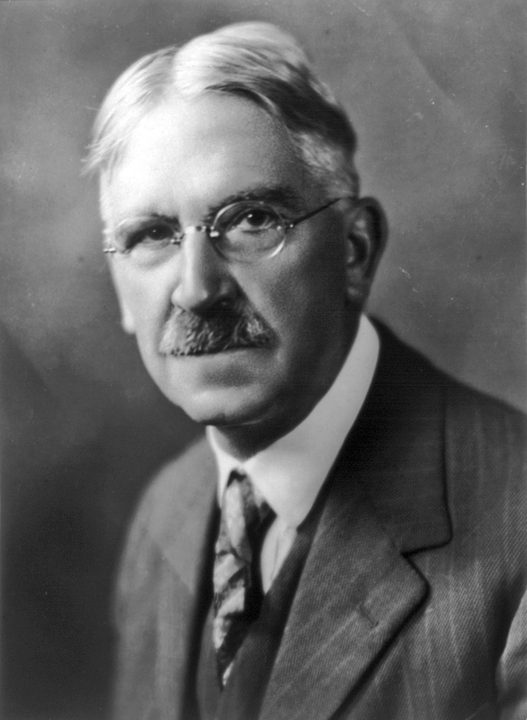

John Dewey 1859–1952
Filósofo y pedagogo · EE. UU.
Big idea. La educación es vida y experiencia, no preparación abstracta: se aprende haciendo y reflexionando sobre lo vivido, en continuidad con la comunidad. La escuela forma personas y ciudadanos, no solo transmite contenidos.
En la práctica. El marco tutorial nace aquí: acompañar el desarrollo integral (personal, social y vocacional), no solo el académico, y conectar lo que se aprende con la vida del estudiante.